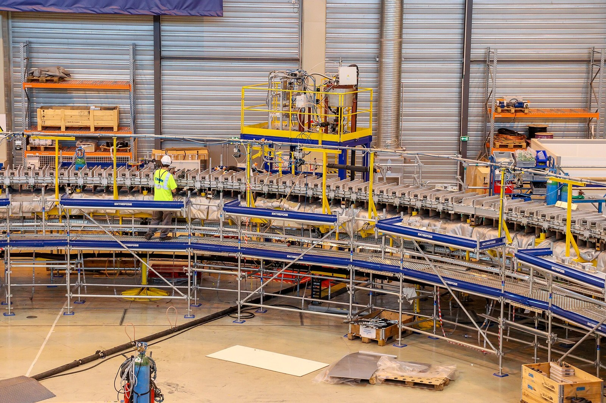
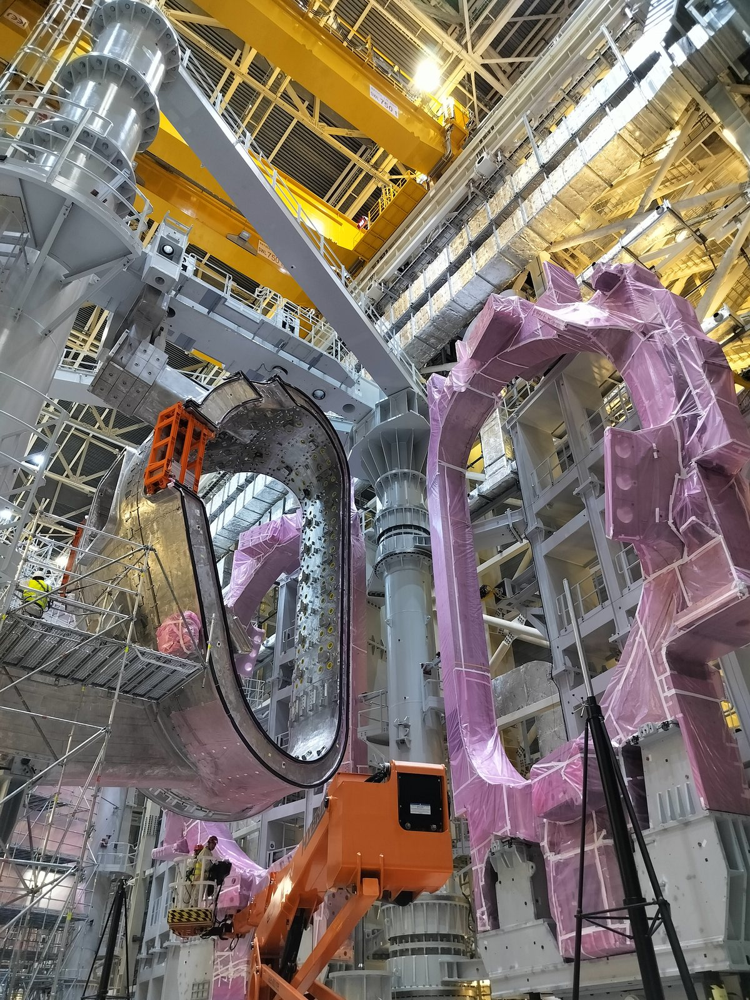

Inside ITER: the machine and fusion gain
Why is it so hard to get more energy out of a fusion plasma than you put into it?
Prior knowledge
- $\text{D–T}$ fusion releases $17.6\ \text{MeV}$: $3.5\ \text{MeV}$ to the helium nucleus and $14.1\ \text{MeV}$ to the neutronchapter Fusion reactions: from the Sun to deuterium and tritium
- A magnetic field exerts a force only on moving chargeschapter Charged particles and magnetic confinement
- Why ITER is built by seven Memberschapter ITER: why, where and who
Core path: follow the steps in order. Besides calculations, the core path includes investigations, explanations and graphs. Tasks marked Optional give extra practice. Optional tasks: 1.
Think about it
Inside a steel chamber as tall as a four-storey house, a gas thinner than air will be heated to about 150 million degrees, ten times hotter than the centre of the Sun. A few metres away, the magnets that hold it are colder than $-269\ ^\circ\text{C}$. Heating the gas takes huge amounts of power, and the hot gas keeps losing its energy.
Can such a machine give out more energy than it takes in, and what would that mean for electricity?
Review: the D–T neutron
Predict
Make your predictions before investigating 2 questions
Prediction 1: the hottest surface
Prediction 2: power out
Investigate
Investigate: explore the machine
Explore the cross-section of ITER. Select every part, in the drawing or in the list of parts below the panel. For each part, note in your own words: what it does, one number, and why it is hard to build. Work in pairs: one of you reads the panel aloud, the other takes notes, then swap.
From your notes, explain to your partner, then write four or five sentences: how do the three kinds of magnets work together to hold the plasma, and why must they be so cold?
Model answer
The 18 D-shaped toroidal field coils make a strong field that runs around the ring, up to $11.8\ \text{T}$. The central solenoid in the middle works like a transformer: a changing current in it drives a large current in the plasma, and this current adds a field that twists the field lines. The six poloidal field coils outside shape the plasma and hold it in position. All the coils are superconducting: only at about $4\ \text{K}$ can they carry their huge currents without electrical resistance and without heating up.
Assess your own answer
Tick the points your own answer already contains.
Review the theory.
The parts of the machine
ITER is a tokamak. Its plasma, about $830\ \text{m}^3$ of deuterium and tritium at about $150$ million $^\circ\text{C}$, is held by magnetic fields inside a ring-shaped steel chamber.
- Magnets. $18$ D-shaped toroidal field coils make the field that runs around the ring (up to $11.8\ \text{T}$). Six ring-shaped poloidal field coils shape the plasma and hold it in place. The central solenoid, a $13\ \text{m}$ tall stack of six modules, works like the primary coil of a transformer: a changing current in it drives a current of up to $15\ \text{MA}$ in the plasma. All the magnets are superconducting and are cooled with helium to about $4\ \text{K}$.
- Vacuum vessel. A double-walled steel chamber, $19.4\ \text{m}$ wide, keeps the vacuum and is the first barrier that keeps tritium in.
- Blanket. $440$ modules line the inside of the vessel. They take the heat and the fast neutrons and shield the vessel and the magnets.
- Divertor. At the bottom, $54$ cassettes with tungsten targets catch the heat and the helium "ash" that flow out along the edge of the plasma. The heat flow there is up to about $10\text{–}20\ \text{MW}$ on each square metre, the highest in the machine.
- Heating. Beams of fast neutral atoms and two kinds of radio waves heat the plasma with a planned $50\ \text{MW}$.
- Cryostat. A vacuum chamber about $30\ \text{m}$ tall around everything insulates the cold magnets from the warm building.


Words of the machine
Theory
Key idea
A fusion plasma loses energy all the time: hot particles escape across the magnetic field and the plasma radiates. To keep it hot, we heat it from outside. The fusion gain $Q$ compares the fusion power produced in the plasma with this heating power.
At $Q = 1$, called scientific breakeven, the plasma produces as much fusion power as it receives. No magnetic fusion experiment has reached it yet with real $\text{D–T}$ fuel: JET's record from 1997 was $16\ \text{MW}$ of fusion power from $24\ \text{MW}$ of heating, $Q \approx 0.67$. ITER's goal is $Q = 10$: $500\ \text{MW}$ of fusion power from $50\ \text{MW}$ of heating, in pulses of $400\text{–}600\ \text{s}$. In D–T fusion, $3.5\ \text{MeV}$ of the $17.6\ \text{MeV}$ goes to the helium nucleus, which is charged and stays in the plasma. At $Q = 10$ these helium nuclei heat the plasma about twice as much as the external heating does: a burning plasma.
Fusion gain
$$Q = \frac{P_\text{fusion}}{P_\text{heating}}$$
Here $P_\text{fusion}$ is the fusion power produced in the plasma and $P_\text{heating}$ is the heating power that reaches the plasma from outside. Both are in watts, so $Q$ has no unit.
Gain is not electricity. $Q$ describes the plasma only. ITER has no turbines and will not produce any electricity. During a pulse the whole plant (heating systems, cooling water, cryogenics, magnets) draws far more electricity than the $50\ \text{MW}$ that reaches the plasma. According to ITER, it needs $110\ \text{MW}$ at the least and up to $620\ \text{MW}$ in peaks of $30\ \text{s}$; the cooling water and the cryogenic systems take about $80\ \%$ of it. A power plant would turn the heat into electricity with steam turbines, typically about one third of it. Even then, $500\ \text{MW}$ of heat would give only about $170\ \text{MW}$ of electricity: far less than ITER's peak demand of $620\ \text{MW}$.
Scientific gain is not commercial viability. A power plant must also produce more electricity than the whole plant uses, run for months instead of minutes, breed its own tritium, survive years of neutron damage and sell its electricity at a price people will pay. ITER is built to test the physics and the technology for that, not to show that fusion electricity is cheap.
Word bank
fusion power · heating power · gain · breakeven · burning plasma · to produce · to consume · to convert (heat into electricity) · a turbine · an experiment · a power plant · commercially viable
Sentence starters
- The gain $Q$ compares … with …
- This does not mean that …, because …
- ITER is an experiment, whereas a power plant …
- A limitation of ITER is …
- The evidence suggests that …
Pair discussion: gain and electricity
Discuss with a partner, using the word bank and the sentence starters, then each write three or four sentences: what is the difference between the gain of the plasma and the electricity a power plant produces? Use the bar chart.
Model answer
The gain $Q$ compares the fusion power made in the plasma with the heating power that reaches the plasma: for ITER $500\ \text{MW} : 50\ \text{MW} = 10$. This does not mean that ITER produces electricity, because ITER has no turbines and the plant draws $110$ to $620\ \text{MW}$ from the grid, far more than the $50\ \text{MW}$ of heating. A power plant would turn only about a third of its heat into electricity, so it needs a much higher gain and a plant that uses little of its own power.
Assess your own answer
Tick the points your own answer already contains.
Review the theory.
Back to your predictions
Compare your predictions with the explorer and the text. Then answer the opening question in one or two sentences: why is it so hard to get more energy out of a fusion plasma than you put in?
Would you change your prediction?
Examples
Once you have studied the chapter's theory, move on to the guided examples. In the first you follow a worked solution step by step; in the next ones you make the choices yourself, and the hints help if you get stuck.
Example 1
ITER's goal is a pulse with $P_\text{heating} = 50\ \text{MW}$ and $P_\text{fusion} = 500\ \text{MW}$. Calculate the fusion gain $Q$ and the power carried by the helium nuclei. Do the helium nuclei heat the plasma more than the external heating does?
Step 1/7
Given: heating power ${P_\text{heating} = 50\ \text{MW}}$, fusion power ${P_\text{fusion} = 500\ \text{MW}}$. In one $\text{D–T}$ reaction, ${E_\text{total} = 17.6\ \text{MeV}}$ is released and the helium nucleus carries ${E_\alpha = 3.5\ \text{MeV}}$. Find: $Q$ and the helium power $P_\alpha$.
Step 2/7
Principle: $Q$ is the ratio of the two powers. Every reaction gives the same share of its energy to the helium nucleus, so the helium nuclei carry the same share of the fusion power.
Step 3/7
Formula: $$\begin{aligned} Q &= \frac{P_\text{fusion}}{P_\text{heating}} \\ P_\alpha &= \frac{E_\alpha}{E_\text{total}} \cdot P_\text{fusion} \end{aligned}$$
Step 4/7
Unit conversions: None are needed. Both powers are in megawatts and both energies in megaelectronvolts, so the units cancel in each ratio.
Step 5/7
Substitution: $$\begin{aligned} Q &= \frac{500\ \text{MW}}{50\ \text{MW}} = 10 \\[6pt] P_\alpha &= \frac{3.5\ \text{MeV}}{17.6\ \text{MeV}} \cdot 500\ \text{MW} \\ &= 0.1989 \cdot 500\ \text{MW} \\ &= 99.4\ \text{MW} \end{aligned}$$
Step 6/7
Answer: $Q = 10$ and $P_\alpha \approx 99\ \text{MW}$, two significant figures as in $3.5\ \text{MeV}$. The helium nuclei heat the plasma with about $99\ \text{MW}$, about twice the external $50\ \text{MW}$: about two thirds of the heating comes from fusion itself.
Step 7/7
Reasonableness: The helium nucleus is about four times heavier than the neutron, so by conservation of momentum it gets about one fifth of the energy: one fifth of $500\ \text{MW}$ is $100\ \text{MW}$. The other, about $400\ \text{MW}$, leaves with the neutrons and heats the blanket. $Q = 10$ is far above JET's $0.67$, which is why ITER is so much larger.
Fuel, blankets and radiation
Tritium fuel cycle. Only a small fraction of the fuel, about one per cent according to ITER, fuses on its way through the plasma. Cryopumps pump the exhaust out of the vessel, and the tritium plant separates the hydrogen isotopes and sends deuterium and tritium back to the fuelling system. Tritium is radioactive (half-life $12.3$ years, a weak beta emitter), so detritiation systems take it out of air and water.
Breeding. Tritium is very rare; today it comes mainly from heavy-water fission reactors. A power plant must make its own from lithium: $^{6}_{3}\text{Li} + \text{n} \to {}^{4}_{2}\text{He} + {}^{3}_{1}\text{H} + 4.8\ \text{MeV}$. In ITER, a few test blanket modules will try out ways to do this.
Radiation protection. The fast neutrons make the vessel and the blanket radioactive (activation), so parts inside the vessel are changed by remote-handling robots. A thick concrete bioshield surrounds the machine. The fuel leaves no long-lived high-level waste, and the reaction stops by itself if anything fails, but tritium, activated parts, the strong magnets and the heat are real hazards. ITER obtained the licence of a French nuclear installation in 2012.
Example 2: How much tritium burns in one pulse?
During one planned pulse ITER produces $500\ \text{MW}$ of fusion power for $400\ \text{s}$. Each $\text{D–T}$ reaction releases $17.6\ \text{MeV}$ and uses one tritium atom, mass $3.016\ \text{u}$.
How many grams of tritium fuse during the pulse? ($1\ \text{MeV} = 1.602 \cdot 10^{-13}\ \text{J}$, $1\ \text{u} = 1.661 \cdot 10^{-27}\ \text{kg}$)
Hint 1: a guiding question
First find the fusion energy of the whole pulse, $E_\text{pulse} = Pt$, in joules.
Hint 2: what is the connection
The number of reactions is $N = E_\text{pulse} / E$, with $E = 17.6\ \text{MeV}$ in joules.
Hint 3: an intermediate step
$N \approx 7.09 \cdot 10^{22}$. Multiply by the mass of one tritium atom in kilograms, then change to grams.
Show the solution
Given
fusion power $P = 500\ \text{MW} = 5.00 \cdot 10^{8}\ \text{W}$, pulse length $t = 400\ \text{s}$, energy of one $\text{D–T}$ reaction $E = 17.6\ \text{MeV}$, mass of a tritium atom $m_\text{T} = 3.016\ \text{u}$, $1\ \text{u} = 1.661 \cdot 10^{-27}\ \text{kg}$, $1\ \text{MeV} = 1.602 \cdot 10^{-13}\ \text{J}$
Find
the mass $m$ of tritium that fuses during the pulse
Principle
Each reaction uses one tritium nucleus and releases $17.6\ \text{MeV}$. The number of reactions is the fusion energy of the pulse divided by the energy of one reaction, and the mass is that number times the mass of one atom.
Formula
$$N = \frac{Pt}{E}, \qquad m = N m_\text{T} = \frac{Pt}{E}\,m_\text{T}$$
Unit conversions
Substitution
$$\begin{aligned} N &= \frac{5.00 \cdot 10^{8}\ \text{W} \cdot 400\ \text{s}}{2.820 \cdot 10^{-12}\ \text{J}} \\ &= 7.093 \cdot 10^{22} \\[6pt] m &= 7.093 \cdot 10^{22} \cdot 5.010 \cdot 10^{-27}\ \text{kg} \\ &= 3.554 \cdot 10^{-4}\ \text{kg} \end{aligned}$$
Answer
$m \approx 0.36\ \text{g}$
This is the tritium burned in one $400$-second pulse; two significant figures, because the fusion power and the pulse length are planned, rounded values.
Reasonableness
One gram of tritium has about $2 \cdot 10^{23}$ atoms, and the pulse needs about $7 \cdot 10^{22}$ reactions, about a third of that. The pulse releases $200\ \text{GJ}$ of fusion energy from less than half a gram of tritium (and about a quarter of a gram of deuterium): the huge energy density that makes fusion attractive. Because only about one per cent of the fuel burns on one pass, far more tritium is pumped through the plasma and recycled.
Example 3: Find the error
Optional Find the parts
Test yourself: the explorer asks you to find six parts from their descriptions.
Common misconception
"$Q = 10$ means that ITER gives ten times more electricity than it uses." $Q$ compares two powers in the plasma: the fusion power and the heating that reaches the plasma. ITER produces no electricity at all, and the whole plant draws far more from the grid than the $50\ \text{MW}$ that reaches the plasma.
A second mistake is "the plasma is $150$ million degrees, so the machine must be extremely hot everywhere". The plasma is hundreds of thousands of times less dense than air, and the magnetic field holds it away from the walls. A few metres away, the magnets are at about $4\ \text{K}$.
Test and assess
First try what you can do without help: each task gives you feedback and a suggestion of what to review. Then assess the chapter's goals. This is not an exam.
1. Concept task: Breakeven
2. Concept task: A record
3. Concept task: Gain and viability
4. Explanation task: Explain and argue
Your friend says: "ITER makes $500\ \text{MW}$. That is enough for a city, so why don't they connect it to the grid?" Answer your friend in four or five sentences. Use $Q$, numbers and at least one reason why a power plant needs more than ITER can show.
Word bank
fusion power · heat · turbine · gain $Q$ · experiment · to draw power from the grid · to breed · pulse
Sentence starters
- That is a good question, but …
- The $500\ \text{MW}$ is …, not …
- ITER is built to …, whereas a power plant …
- Even if …, it would still …
Model answer
That is a good question, but the $500\ \text{MW}$ is fusion power, heat in the plasma, not electricity. ITER has no turbines, and during plasma operation the whole plant draws up to $620\ \text{MW}$ from the grid, far more than the $50\ \text{MW}$ of heating that reaches the plasma. Even if turbines turned about a third of the heat into electricity, $500\ \text{MW}$ would give only about $170\ \text{MW}$, far less than ITER's peak demand. ITER is built to show a burning plasma with $Q = 10$ and to test the technology; a power plant must also run for months, breed its own tritium and be affordable.
Assess your own answer
Tick the points your own answer already contains.
Review the theory.
Summary
- ITER's superconducting magnets (toroidal field coils, poloidal field coils, central solenoid) hold and shape the plasma; the vacuum vessel, the blanket and the divertor surround it; beams and waves heat it.
- Fusion gain: $Q = P_\text{fusion} / P_\text{heating}$. $Q = 1$ is scientific breakeven; JET reached $0.67$ in 1997; ITER aims at $Q = 10$, $500\ \text{MW}$ from $50\ \text{MW}$.
- At $Q = 10$ the helium nuclei carry about $100\ \text{MW}$ and heat the plasma more than the external heating: a burning plasma.
- $Q$ is a plasma gain, not electricity. ITER produces no electricity, and a power plant needs much more than a high $Q$.
- Tritium is recycled in a closed loop and must later be bred from lithium; neutrons activate the structure, so ITER is a licensed nuclear installation.
Le coin français
The French name of the tokamak is the same word, le tokamak, and many words of the machine look like English ones. Listen, repeat, and say the last sentence to your partner.